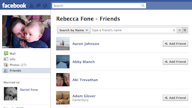

A wee script I wrote to quickly find Facebook connections with people I don’t know.
In New Zealand, we reckon there’s only 2 degrees of seperation between any of the ~4.3 million folks living here. There’s even a business based on the premise. If that’s true, I should be able to find connections with every Kiwi I encounter on Facebook.
Drag the following link below into your bookmark bar.
2° Facebook
Browse to someones friend list. 
Click the bookmarklet and wait a second.
Friends without any connections will be removed from the list.
When more friends appear at the bottom, just click the bookmarklet again.